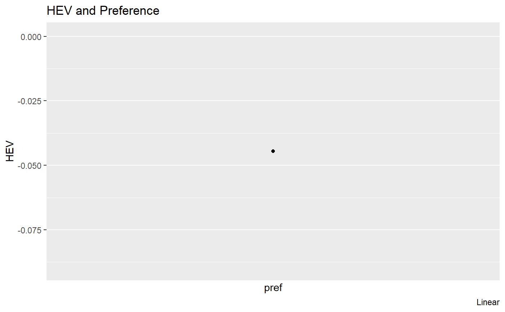

Linear (CRS) Optimal Allocation Solution
fst_opti_lin_lbl.RmdBack to Fan’s Optimal Allocation Homepage Table of Content
Outline
There is a dataset with child attributes, nutritional inputs and outputs. Run regression to estimate some input output relationship first. Then generate required inputs for code.
- Required Input
- @param df tibble data table including variables using svr names below each row is potentially an individual who will receive alternative allocations
- @param svr_A_i string name of the A_i variable, dot product of covariates and coefficients
- @param svr_alpha_i string name of the alpha_i variable, individual specific elasticity information
- @param svr_beta_i string name of the beta_i variable, relative preference weight for each child
- @param svr_N_i string name of the vector of existing inputs, based on which to compute aggregate resource
- @param fl_N_hat float total resource avaible for allocation, if not specific, sum by svr_N_i
- @param fl_rho float preference for equality for the planner
- @return a dataframe that expands the df inputs with additional results.
- The structure assumes some regression has already taken place to generate the i specific variables listed. and
Doing this allows for lagged intereaction that are time specific in an arbitrary way.
Get Data
# Load Library
# Select Cebu Only
df_hw_cebu_m24 <- df_hgt_wgt %>% filter(S.country == 'Cebu' & svymthRound == 24 & prot > 0 & hgt > 0) %>% drop_na()
# Generate Discrete Version of momEdu
df_hw_cebu_m24 <- df_hw_cebu_m24 %>%
mutate(momEduRound = cut(momEdu,
breaks=c(-Inf, 10, Inf),
labels=c("MEduLow","MEduHigh"))) %>%
mutate(hgt0med = cut(hgt0,
breaks=c(-Inf, 50, Inf),
labels=c("h0low","h0high")))
df_hw_cebu_m24$momEduRound = as.factor(df_hw_cebu_m24$momEduRound)
df_hw_cebu_m24$hgt0med = as.factor(df_hw_cebu_m24$hgt0med)
# Attach
attach(df_hw_cebu_m24)Regression with Data and Construct Input Arrays
Linear Regression
# Input Matrix
mt_lincv <- model.matrix(~ hgt0 + wgt0)
mt_linht <- model.matrix(~ sex:hgt0med - 1)
# Regress Height At Month 24 on Nutritional Inputs with controls
rs_hgt_prot_lin = lm(hgt ~ prot:mt_linht + mt_lincv - 1)
print(summary(rs_hgt_prot_lin))##
## Call:
## lm(formula = hgt ~ prot:mt_linht + mt_lincv - 1)
##
## Residuals:
## Min 1Q Median 3Q Max
## -15.212 -2.339 0.088 2.437 9.805
##
## Coefficients:
## Estimate Std. Error t value Pr(>|t|)
## mt_lincv(Intercept) 5.638e+01 3.683e+00 15.307 < 2e-16 ***
## mt_lincvhgt0 3.774e-01 8.723e-02 4.326 1.66e-05 ***
## mt_lincvwgt0 1.154e-03 3.705e-04 3.115 0.00189 **
## prot:mt_linhtsexFemale:hgt0medh0low 1.014e-02 1.058e-02 0.959 0.33783
## prot:mt_linhtsexMale:hgt0medh0low 6.018e-02 9.625e-03 6.252 5.91e-10 ***
## prot:mt_linhtsexFemale:hgt0medh0high 3.228e-02 1.332e-02 2.423 0.01558 *
## prot:mt_linhtsexMale:hgt0medh0high 6.619e-02 1.001e-02 6.612 6.05e-11 ***
## ---
## Signif. codes: 0 '***' 0.001 '**' 0.01 '*' 0.05 '.' 0.1 ' ' 1
##
## Residual standard error: 3.473 on 1036 degrees of freedom
## Multiple R-squared: 0.9981, Adjusted R-squared: 0.9981
## F-statistic: 7.79e+04 on 7 and 1036 DF, p-value: < 2.2e-16Log-Linear Regression
# Input Matrix Generation
mt_logcv <- model.matrix(~ hgt0 + wgt0)
mt_loght <- model.matrix(~ sex:hgt0med - 1)
# Log and log regression for month 24
rs_hgt_prot_log = lm(log(hgt) ~ log(prot):mt_loght + mt_logcv - 1)
print(summary(rs_hgt_prot_log))##
## Call:
## lm(formula = log(hgt) ~ log(prot):mt_loght + mt_logcv - 1)
##
## Residuals:
## Min 1Q Median 3Q Max
## -0.223890 -0.030027 0.002461 0.031047 0.118097
##
## Coefficients:
## Estimate Std. Error t value Pr(>|t|)
## mt_logcv(Intercept) 4.087e+00 5.342e-02 76.512 < 2e-16
## mt_logcvhgt0 4.305e-03 1.224e-03 3.516 0.000457
## mt_logcvwgt0 1.465e-05 4.733e-06 3.096 0.002012
## log(prot):mt_loghtsexFemale:hgt0medh0low 6.687e-03 2.218e-03 3.014 0.002640
## log(prot):mt_loghtsexMale:hgt0medh0low 1.209e-02 2.176e-03 5.557 3.49e-08
## log(prot):mt_loghtsexFemale:hgt0medh0high 9.251e-03 2.441e-03 3.790 0.000159
## log(prot):mt_loghtsexMale:hgt0medh0high 1.394e-02 2.288e-03 6.094 1.55e-09
##
## mt_logcv(Intercept) ***
## mt_logcvhgt0 ***
## mt_logcvwgt0 **
## log(prot):mt_loghtsexFemale:hgt0medh0low **
## log(prot):mt_loghtsexMale:hgt0medh0low ***
## log(prot):mt_loghtsexFemale:hgt0medh0high ***
## log(prot):mt_loghtsexMale:hgt0medh0high ***
## ---
## Signif. codes: 0 '***' 0.001 '**' 0.01 '*' 0.05 '.' 0.1 ' ' 1
##
## Residual standard error: 0.04436 on 1036 degrees of freedom
## Multiple R-squared: 0.9999, Adjusted R-squared: 0.9999
## F-statistic: 1.448e+06 on 7 and 1036 DF, p-value: < 2.2e-16Construct Input Arrays \(A_i\) and \(\alpha_i\)
# Generate A_i
ar_Ai_lin <- mt_lincv %*% as.matrix(rs_hgt_prot_lin_tidy %>% filter(!str_detect(term, 'prot')) %>% select(estimate))
ar_Ai_log <- mt_logcv %*% as.matrix(rs_hgt_prot_log_tidy %>% filter(!str_detect(term, 'prot')) %>% select(estimate))
# Generate alpha_i
ar_alphai_lin <- mt_linht %*% as.matrix(rs_hgt_prot_lin_tidy %>% filter(str_detect(term, 'prot')) %>% select(estimate))
ar_alphai_log <- mt_loght %*% as.matrix(rs_hgt_prot_log_tidy %>% filter(str_detect(term, 'prot')) %>% select(estimate))
# Child Weight
ar_beta <- rep(1/length(ar_Ai_lin), times=length(ar_Ai_lin))
# Initate Dataframe that will store all estimates and optimal allocation relevant information
mt_opti <- cbind(ar_alphai_lin, ar_Ai_lin, ar_beta)
ar_st_varnames <- c('alpha', 'A', 'beta')
tb_opti <- as_tibble(mt_opti) %>% rename_all(~c(ar_st_varnames))## Warning: `as_tibble.matrix()` requires a matrix with column names or a `.name_repair` argument. Using compatibility `.name_repair`.
## This warning is displayed once per session.Optimal Allocations
Common Parameters for Optimal Allocation
# Child Count
df_hw_cebu_m24_full <- df_hw_cebu_m24
it_obs = dim(df_hw_cebu_m24)[1]
# Total Resource Count
ar_prot_data = df_hw_cebu_m24$prot
fl_N_agg = sum(ar_prot_data)
# Vector of Planner Preference
ar_rho = c(seq(-200, -100, length.out=5), seq(-100, -25, length.out=5), seq(-25, -5, length.out=5), seq(-5, -1, length.out=5), seq(-1, -0.01, length.out=5), seq(0.01, 0.25, length.out=5), seq(0.25, 0.99, length.out=5))
ar_rho = c(-50)
ar_rho = unique(ar_rho)Optimal Linear Allocation (CRS)
This also works with any CRS CES.
Optimal Linear Allocation Hard-Coded
# Optimal Linear Equation
# Planner Inputs
mt_hev_lin = matrix(, nrow = length(ar_rho), ncol = 2)
mt_opti_N = matrix(, nrow = it_obs, ncol = length(ar_rho))
# A. First Loop over Planner Preference
# Generate Rank Order
for (it_rho_ctr in seq(1,length(ar_rho))) {
rho = ar_rho[it_rho_ctr]
# B. Generate V4, Rank Index Value, rho specific
# tb_opti <- tb_opti %>% mutate(!!paste0('rv_', it_rho_ctr) := A/((alpha*beta))^(1/(1-rho)))
tb_opti <- tb_opti %>% mutate(rank_val = A/((alpha*beta))^(1/(1-rho)))
# c. Generate Rank Index
tb_opti <- tb_opti %>% arrange(rank_val) %>% mutate(rank_idx = row_number())
# d. Populate lowest index alpha, beta, and A to all rows
tb_opti <- tb_opti %>% mutate(lowest_rank_A = A[rank_idx==1]) %>%
mutate(lowest_rank_alpha = alpha[rank_idx==1]) %>%
mutate(lowest_rank_beta = beta[rank_idx==1])
# e. relative slope and relative intercept with respect to lowest index
tb_opti <- tb_opti %>%
mutate(rela_slope_to_lowest =
(((lowest_rank_alpha*lowest_rank_beta)/(alpha*beta))^(1/(rho-1))*(lowest_rank_alpha/alpha))
) %>%
mutate(rela_intercept_to_lowest =
((((lowest_rank_alpha*lowest_rank_beta)/(alpha*beta))^(1/(rho-1))*(lowest_rank_A/alpha)) - (A/alpha))
)
# f. cumulative sums
tb_opti <- tb_opti %>%
mutate(rela_slope_to_lowest_cumsum =
cumsum(rela_slope_to_lowest)
) %>%
mutate(rela_intercept_to_lowest_cumsum =
cumsum(rela_intercept_to_lowest)
)
# g. inverting cumulative slopes and intercepts
tb_opti <- tb_opti %>%
mutate(rela_slope_to_lowest_cumsum_invert =
(1/rela_slope_to_lowest_cumsum)
) %>%
mutate(rela_intercept_to_lowest_cumsum_invert =
((-1)*(rela_intercept_to_lowest_cumsum)/(rela_slope_to_lowest_cumsum))
)
# h. Relative x-intercept points
tb_opti <- tb_opti %>%
mutate(rela_x_intercept =
(-1)*(rela_intercept_to_lowest/rela_slope_to_lowest)
)
# i. Inverted relative x-intercepts
tb_opti <- tb_opti %>%
mutate(opti_lowest_spline_knots =
(rela_intercept_to_lowest_cumsum + rela_slope_to_lowest_cumsum*rela_x_intercept)
)
# j. Sort by order of receiving transfers/subsidies
tb_opti <- tb_opti %>% arrange(rela_x_intercept)
# k. Find position of subsidy
tb_opti <- tb_opti %>% arrange(opti_lowest_spline_knots) %>%
mutate(tot_devi = opti_lowest_spline_knots - fl_N_agg) %>%
arrange((-1)*case_when(tot_devi < 0 ~ tot_devi)) %>%
mutate(allocate_lowest =
case_when(row_number() == 1 ~
rela_intercept_to_lowest_cumsum_invert +
rela_slope_to_lowest_cumsum_invert*fl_N_agg)) %>%
mutate(allocate_lowest = allocate_lowest[row_number() == 1]) %>%
mutate(opti_allocate =
rela_intercept_to_lowest +
rela_slope_to_lowest*allocate_lowest) %>%
mutate(opti_allocate =
case_when(opti_allocate >= 0 ~ opti_allocate)) %>%
mutate(opti_allocate_total = sum(opti_allocate, na.rm=TRUE))
}
# lineplot <- tb_opti %>%
# gather(variable, value, -month) %>%
# ggplot(aes(x=month, y=value, colour=variable, linetype=variable)) +
# geom_line() +
# geom_point() +
# labs(title = 'Mean and SD of Temperature Acorss US Cities',
# x = 'Months',
# y = 'Temperature in Fahrenheit',
# caption = 'Temperature data 2017') +
# scale_x_continuous(labels = as.character(df_temp_mth_summ$month),
# breaks = df_temp_mth_summ$month)Optimal Linear Allocation Hard-Coded
# Optimal Linear Equation
# Planner Inputs
mt_hev_lin = matrix(, nrow = length(ar_rho), ncol = 2)
mt_opti_N = matrix(, nrow = it_obs, ncol = length(ar_rho))
# Generate
for (it_rho_ctr in seq(1,length(ar_rho))) {
rho = ar_rho[it_rho_ctr]
ar_term_b = ar_Ai_lin*(ar_alphai_lin*(1/(rho - 1)))
ar_term_c = ar_Ai_lin*(ar_alphai_lin*(1/(rho - 1)))
ar_term_d = (ar_alphai_lin*(rho/(rho - 1)))
# Child Specific Optimal Allocation Array to Store
ar_opti_lin = matrix(, nrow = it_obs, ncol = 1)
for (m in seq(1:it_obs)) {
fl_topright_q = sum((ar_term_b[m] - ar_term_c)/ar_term_d)
fl_bottom_q = sum((ar_alphai_lin[m]/ar_alphai_lin)^(rho/(rho-1)))
fl_opti_q = (fl_N_agg - fl_topright_q)/fl_bottom_q
ar_opti_lin[m] = fl_opti_q
}
# Min and Max
ar_opti_lin = pmin(fl_N_agg, pmax(0, ar_opti_lin))
mt_opti_N[,it_rho_ctr] = ar_opti_lin
df_hw_cebu_m24_full = cbind(df_hw_cebu_m24_full, ar_opti_lin)
# Utilities
fl_v_data_lin = sum((ar_Ai_lin + ar_prot_data*ar_alphai_lin - 70)^rho)^(1/rho)
fl_v_opti_lin = sum((ar_Ai_lin + ar_opti_lin*ar_alphai_lin - 70)^rho)^(1/rho)
## HEV
fl_hev = (fl_v_opti_lin/fl_v_data_lin - 1)
mt_hev_lin[it_rho_ctr,1] = rho;
mt_hev_lin[it_rho_ctr,2] = fl_hev;
}Optimal Linear Allocation Pseudo-Function
# Randomly test 10 individuals/rho combinations to see if the same results produced by the functional (vectorized) code below as the looped code above.
set.seed(123)
for (it_ctr in seq(1, 10)) {
# Which Individual to Test
it_indi_ctr_test = sample(it_obs, 1)
it_rho_ctr_test = sample(length(ar_rho), 1)
# Get Inputs for Function
fl_A = ar_Ai_lin[it_indi_ctr_test]
fl_alpha = ar_alphai_lin[it_indi_ctr_test]
fl_N = df_hw_cebu_m24$prot[it_indi_ctr_test]
ar_A = ar_Ai_lin
ar_alpha = ar_alphai_lin
fl_rho = ar_rho[it_rho_ctr_test]
# Existing optimal choice
fl_opti_loop = mt_opti_N[it_indi_ctr_test, it_rho_ctr_test]
# From Paper Proposition 1
# top of fraction
fl_p1_s1 = (fl_A * ((fl_alpha) * (1 / (fl_rho - 1))))
ar_p1_s2 = (ar_A * ((ar_alpha) * (1 / (fl_rho - 1))))
ar_p1_s3 = ((ar_alpha) * (fl_rho / (fl_rho - 1)))
fl_p1_s3 = fl_N_agg - sum((fl_p1_s1 - ar_p1_s2) / ar_p1_s3)
# bottom of fraction
ar_p2 = (fl_alpha / ar_alpha) ^ (fl_rho / (fl_rho - 1))
# overall
fl_opti_equa = fl_p1_s3 / sum(ar_p2)
fl_opti_equa = pmin(fl_N_agg, pmax(0, fl_opti_equa))
print(
paste0(
'it_ctr:',
it_ctr,
', fl_rho:',
fl_rho,
', i:',
it_indi_ctr_test,
', fl_opti_equa:',
fl_opti_equa,
', fl_opti_loop:',
fl_opti_loop
)
)
}## [1] "it_ctr:1, fl_rho:-50, i:415, fl_opti_equa:45.1551485512421, fl_opti_loop:45.1551485512421"
## [1] "it_ctr:2, fl_rho:-50, i:179, fl_opti_equa:45.1550576731449, fl_opti_loop:45.1550576731449"
## [1] "it_ctr:3, fl_rho:-50, i:195, fl_opti_equa:8.5708842903663, fl_opti_loop:8.5708842903663"
## [1] "it_ctr:4, fl_rho:-50, i:1038, fl_opti_equa:45.1631512352417, fl_opti_loop:45.1631512352417"
## [1] "it_ctr:5, fl_rho:-50, i:665, fl_opti_equa:15.6266740792616, fl_opti_loop:15.6266740792616"
## [1] "it_ctr:6, fl_rho:-50, i:709, fl_opti_equa:9.20249417337394, fl_opti_loop:9.20249417337394"
## [1] "it_ctr:7, fl_rho:-50, i:953, fl_opti_equa:9.20999153169638, fl_opti_loop:9.20999153169638"
## [1] "it_ctr:8, fl_rho:-50, i:1017, fl_opti_equa:45.1592601700771, fl_opti_loop:45.1592601700771"
## [1] "it_ctr:9, fl_rho:-50, i:840, fl_opti_equa:15.6533277331412, fl_opti_loop:15.6533277331412"
## [1] "it_ctr:10, fl_rho:-50, i:519, fl_opti_equa:45.1449956189093, fl_opti_loop:45.1449956189093"Optimal Linear Allocation Function DPLYR
# Define Explicit Optimal Choice Function
ffi_linear_dplyrdo <- function(fl_A, fl_alpha, fl_rho, ar_A, ar_alpha, fl_N_agg){
# Apply Function From Paper Proposition 1
fl_p1_s1 = (fl_A * ((fl_alpha) * (1 / (fl_rho - 1))))
ar_p1_s2 = (ar_A * ((ar_alpha) * (1 / (fl_rho - 1))))
ar_p1_s3 = ((ar_alpha) * (fl_rho / (fl_rho - 1)))
fl_p1_s3 = fl_N_agg - sum((fl_p1_s1 - ar_p1_s2) / ar_p1_s3)
# bottom of fraction
ar_p2 = (fl_alpha / ar_alpha) ^ (fl_rho / (fl_rho - 1))
# overall
fl_opti_equa = fl_p1_s3 / sum(ar_p2)
fl_opti_equa = pmin(fl_N_agg, pmax(0, fl_opti_equa))
return(fl_opti_equa)
}
# Child Heterogeneity as Matrix
mt_nN_by_nQ_A_alpha = cbind(ar_Ai_lin, ar_alphai_lin, ar_prot_data)
ar_st_col_names = c('fl_A', 'fl_alpha', 'ar_prot_data')
tb_nN_by_nQ_A_alpha <- as_tibble(mt_nN_by_nQ_A_alpha) %>% rename_all(~c(ar_st_col_names))
# fl_A, fl_alpha are from columns of tb_nN_by_nQ_A_alpha
fl_rho = ar_rho[5]
tb_nN_by_nQ_A_alpha = tb_nN_by_nQ_A_alpha %>% rowwise() %>%
mutate(dplyr_eval_opti = ffi_linear_dplyrdo(fl_A, fl_alpha, fl_rho,
ar_Ai_lin, ar_alphai_lin,
fl_N_agg))
# Show
kable(tb_nN_by_nQ_A_alpha[1:10,]) %>%
kable_styling(bootstrap_options = c("striped", "hover", "responsive"))| fl_A | fl_alpha | ar_prot_data | dplyr_eval_opti |
|---|---|---|---|
| 78.41352 | 0.0101448 | 14.1 | NA |
| 79.86734 | 0.0322764 | 20.6 | NA |
| 78.89190 | 0.0322764 | 10.3 | NA |
| 80.56575 | 0.0661926 | 18.4 | NA |
| 77.83778 | 0.0101448 | 16.7 | NA |
| 79.57011 | 0.0661926 | 15.9 | NA |
| 77.84659 | 0.0101448 | 30.1 | NA |
| 77.97456 | 0.0101448 | 14.7 | NA |
| 79.96759 | 0.0661926 | 9.8 | NA |
| 77.72951 | 0.0601778 | 9.9 | NA |
Optimal Linear Allocation Function DPLYR All Rho
# Generate Data, all individuals specific parameters
mt_nN_by_nQ_A_alpha = cbind(ar_Ai_lin, ar_alphai_lin, ar_prot_data)
ar_st_col_names = c('fl_A', 'fl_alpha', 'ar_prot_data')
tb_nN_by_nQ_A_alpha <- as_tibble(mt_nN_by_nQ_A_alpha) %>% rename_all(~c(ar_st_col_names))
# Duplicate to rhos
tb_nN_by_nQ_A_alpha_mesh_rho <- tb_nN_by_nQ_A_alpha %>% expand_grid(fl_rho = ar_rho) %>%
arrange(fl_A, fl_alpha, fl_rho) %>%
select(fl_rho, !!!syms(ar_st_col_names))
# fl_A, fl_alpha are from columns of tb_nN_by_nQ_A_alpha
tb_nN_by_nQ_A_alpha_mesh_rho = tb_nN_by_nQ_A_alpha_mesh_rho %>% rowwise() %>%
mutate(dplyr_eval_opti = ffi_linear_dplyrdo(fl_A, fl_alpha, fl_rho,
ar_Ai_lin, ar_alphai_lin,
fl_N_agg)) %>%
ungroup()
# Check if Total Allocations sum Up to Same Level for Each RHO
tb_nN_by_nQ_A_alpha_mesh_rho %>%
group_by(fl_rho) %>%
summarise(N_opti_all_sum = sum(dplyr_eval_opti))%>%
kable() %>%
kable_styling(bootstrap_options = c("striped", "hover", "responsive"))| fl_rho | N_opti_all_sum |
|---|---|
| -50 | 22844.59 |
# Show
kable(tb_nN_by_nQ_A_alpha_mesh_rho[1:50,]) %>%
kable_styling(bootstrap_options = c("striped", "hover", "responsive"))| fl_rho | fl_A | fl_alpha | ar_prot_data | dplyr_eval_opti |
|---|---|---|---|---|
| -50 | 73.69785 | 0.0601778 | 25.0 | 9.126978 |
| -50 | 74.36725 | 0.0101448 | 9.1 | 45.091040 |
| -50 | 74.56855 | 0.0601778 | 0.9 | 9.144852 |
| -50 | 74.61270 | 0.0601778 | 84.8 | 9.145758 |
| -50 | 74.74121 | 0.0601778 | 27.1 | 9.148396 |
| -50 | 74.75063 | 0.0101448 | 13.8 | 45.098640 |
| -50 | 75.09272 | 0.0101448 | 7.1 | 45.105422 |
| -50 | 75.12223 | 0.0101448 | 14.4 | 45.106007 |
| -50 | 75.37717 | 0.0101448 | 14.5 | 45.111061 |
| -50 | 75.45599 | 0.0601778 | 10.9 | 9.163069 |
| -50 | 75.61525 | 0.0101448 | 20.6 | 45.115780 |
| -50 | 75.67069 | 0.0101448 | 7.6 | 45.116879 |
| -50 | 75.70282 | 0.0601778 | 15.3 | 9.168136 |
| -50 | 75.73533 | 0.0101448 | 9.9 | 45.118161 |
| -50 | 75.83439 | 0.0601778 | 48.9 | 9.170837 |
| -50 | 75.88573 | 0.0601778 | 7.6 | 9.171890 |
| -50 | 75.88659 | 0.0101448 | 29.7 | 45.121159 |
| -50 | 75.90509 | 0.0601778 | 27.6 | 9.172288 |
| -50 | 76.00335 | 0.0101448 | 24.2 | 45.123474 |
| -50 | 76.05076 | 0.0101448 | 25.5 | 45.124414 |
| -50 | 76.06710 | 0.0601778 | 17.3 | 9.175614 |
| -50 | 76.06796 | 0.0101448 | 22.5 | 45.124754 |
| -50 | 76.12665 | 0.0101448 | 14.8 | 45.125918 |
| -50 | 76.12671 | 0.0101448 | 9.4 | 45.125919 |
| -50 | 76.13000 | 0.0601778 | 3.1 | 9.176905 |
| -50 | 76.14948 | 0.0601778 | 23.8 | 9.177305 |
| -50 | 76.15721 | 0.0101448 | 35.0 | 45.126524 |
| -50 | 76.19763 | 0.0601778 | 9.9 | 9.178293 |
| -50 | 76.21354 | 0.0101448 | 12.0 | 45.127640 |
| -50 | 76.22748 | 0.0601778 | 44.8 | 9.178906 |
| -50 | 76.23978 | 0.0601778 | 39.4 | 9.179158 |
| -50 | 76.24546 | 0.0601778 | 18.2 | 9.179275 |
| -50 | 76.25126 | 0.0101448 | 8.5 | 45.128388 |
| -50 | 76.25231 | 0.0601778 | 17.0 | 9.179416 |
| -50 | 76.28828 | 0.0101448 | 13.2 | 45.129122 |
| -50 | 76.29115 | 0.0101448 | 15.5 | 45.129179 |
| -50 | 76.29224 | 0.0101448 | 15.3 | 45.129201 |
| -50 | 76.30844 | 0.0101448 | 23.6 | 45.129522 |
| -50 | 76.32309 | 0.0101448 | 38.6 | 45.129812 |
| -50 | 76.32418 | 0.0101448 | 12.9 | 45.129834 |
| -50 | 76.35211 | 0.0601778 | 10.2 | 9.181464 |
| -50 | 76.36126 | 0.0601778 | 16.5 | 9.181652 |
| -50 | 76.39356 | 0.0601778 | 57.1 | 9.182315 |
| -50 | 76.39433 | 0.0101448 | 8.2 | 45.131224 |
| -50 | 76.41246 | 0.0101448 | 34.0 | 45.131584 |
| -50 | 76.41605 | 0.0101448 | 17.9 | 45.131655 |
| -50 | 76.42105 | 0.0601778 | 12.1 | 9.182880 |
| -50 | 76.43025 | 0.0101448 | 23.7 | 45.131936 |
| -50 | 76.43804 | 0.0101448 | 18.4 | 45.132091 |
| -50 | 76.49277 | 0.0101448 | 27.7 | 45.133176 |
Graphical Illustration of Optimal Allocation
tb_hev_lin <- as_tibble(mt_hev_lin) %>% mutate(id = row_number())
lineplot_lin <- tb_hev_lin %>%
ggplot(aes(x=id, y=V2)) +
geom_line() +
geom_point() +
labs(title = 'HEV and Preference',
x = 'pref',
y = 'HEV',
caption = 'Linear') +
scale_x_continuous(labels = as.character(tb_hev_lin$V1),
breaks = tb_hev_lin$V1)
print(lineplot_lin)## geom_path: Each group consists of only one observation. Do you need to adjust
## the group aesthetic?
Optimal LogLinear Allocation
This also works with any CRS CES.
Optimal LogLinear Allocation Hard-Coded
mt_hev_log = matrix(, nrow = length(ar_rho), ncol = 2)
for (it_rho_ctr in seq(1,length(ar_rho))) {
rho = ar_rho[it_rho_ctr]
fl_N_hat = sum(df_hw_cebu_m24$prot)
ar_term_b = ar_Ai_lin*(ar_alphai_lin*(1/(rho - 1)))
ar_term_c = ar_Ai_lin*(ar_alphai_lin*(1/(rho - 1)))
ar_term_d = (ar_alphai_lin*(rho/(rho - 1)))
# Child Specific Optimal Allocation Array to Store
ar_opti_lin = matrix(, nrow = it_obs, ncol = 1)
for (m in seq(1:it_obs)) {
fl_topright_q = sum((ar_term_b[m] - ar_term_c)/ar_term_d)
fl_bottom_q = sum((ar_alphai_lin[m]/ar_alphai_lin)^(rho/(rho-1)))
fl_opti_q = (fl_N_hat - fl_topright_q)/fl_bottom_q
ar_opti_lin[m] = fl_opti_q
}
# Min and Max
ar_opti_lin = pmin(fl_N_hat, pmax(0, ar_opti_lin))
df_hw_cebu_m24_full = cbind(df_hw_cebu_m24_full, ar_opti_lin)
# Utilities
fl_v_data_lin = sum((ar_Ai_lin + prot*ar_alphai_lin - 70)^rho)^(1/rho)
fl_v_opti_lin = sum((ar_Ai_lin + ar_opti_lin*ar_alphai_lin - 70)^rho)^(1/rho)
## HEV
fl_hev = (fl_v_opti_lin/fl_v_data_lin - 1)
mt_hev_log[it_rho_ctr,1] = rho;
mt_hev_log[it_rho_ctr,2] = fl_hev;
}
tb_hev_log <- as_tibble(mt_hev_log) %>% mutate(id = row_number())
lineplot_log <- tb_hev_log %>%
ggplot(aes(x=id, y=V2)) +
geom_line() +
geom_point() +
labs(title = 'HEV and Preference',
x = 'pref',
y = 'HEV',
caption = 'Linear') +
scale_x_continuous(labels = as.character(tb_hev_log$V1),
breaks = tb_hev_log$V1)
print(lineplot_log)## geom_path: Each group consists of only one observation. Do you need to adjust
## the group aesthetic?